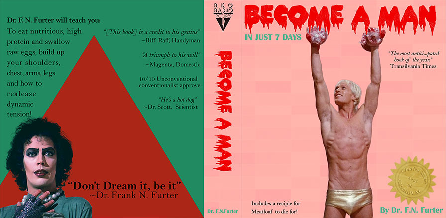

My work
From Passion to Pint
CMS
Illustrator
Photoshop
Brochure
From Passion to Pint
The third semester saw me deeply engrossed in a group project centered around creating a documentary-style video. Our focus was on Tooth and Nail, a brewpub and its dedicated owner located in Ottawa. The narrative delved into the journey of Matt Tweedy, revealing his entrepreneurial aspirations and his fervor for the brewing process. Despite juggling multiple classes and their respective projects, we had a tight six-week deadline to finalize our project. Remarkably, we consistently attended weekly meetings with our professor and diligently prepared all necessary documentation for our presentation. At times, we even managed to stay ahead of schedule. For instance, I had prepped samples of motion graphics and infographics to showcase to the professor. Our progress impressed the professor so much that we were slated as the first to present to a combined audience of two Video Production classes, with even a program coordinator in attendance. I take immense pride in the collaborative effort that resulted in our outstanding production.
Filming Day
My involvement spanned the entire video production process, from brainstorming to the final editing phase. On set, I managed the main camera used for interviews and assisted in setting up the lighting. I also contributed to capturing initial b-roll footage. A couple of standout moments for me were perfecting the creative treatment with a shallow depth of field and catching the reflection of the LED panel in our stand-in's glasses. Our aim was to achieve a soft, yet present background, fostering a warm and conversational atmosphere during the interviews. Dealing with the challenge of the interview subject wearing glasses, I strategically positioned a reflector to complement the key light setup, effectively softening shadows and enhancing facial illumination. Addressing these elements during filming considerably eased the post-production phase.
Motion Graphics
My primary responsibility unexpectedly involved creating motion graphics and animations. I commenced by designing our group's logo and animating it. Employing vector illustrations, the original design seamlessly transitioned into After Effects. The animation remained simple yet impactful. During the brainstorming phase, I envisioned using the brewery's existing logos from their cans. I aimed for a vintage, hand-drawn appearance, crafting paper-like cutouts resembling different layers of the logos. Initially utilizing Illustrator, I later learned that Photoshop documents could be imported similarly. This project marked my debut in creating animations within After Effects. I ventured into learning Duik Angela and crafted several animations, including one used by a team member for the lower thirds. Tutorials guided my creation of map animations and inspired the timeline infographic. I meticulously edited the interview audio, syncing animation timing with key audio moments while aligning imagery with the brewery's established branding. Additionally, I designed credits, modifying a template to resemble the effervescence of golden beer. We chose not to assign specific titles due to our collective involvement across various roles. Expressing gratitude, we acknowledged the establishment, logo creator, school, Algonquin peoples, and those interviewed. Tragically, our main subject's father passed away during post-production, prompting us to include a tribute before the credits in honor of his significance in our subject's life.
Editing
Assuming the role of final editor, I undertook tasks such as color grading the second camera and keyframing audio cuts. Addressing the considerable variance in white balance between cameras, I standardized settings across clips using an adjustment layer, subsequently fine-tuning individual clips. Regrettably, our initial room tone recording was missing, necessitating creative methods to ensure consistent audio undercuts and keyframes. I strategically inserted pauses to facilitate a semblance of room tone. Lastly, I curated the music, synchronizing it with pivotal moments and seamlessly transitioning tracks to maintain narrative coherence. We deliberately limited our video to two tracks, aiming for an energizing yet cinematic vibe to complement both interviews and animations.
Challenges
This project presented formidable challenges that contributed significantly to my learning curve. Embracing a proactive approach, I typically work within a timeframe shorter than allocated, allowing room for unforeseen setbacks or enhancements. However, not all team members shared this method, leading to stress within the group. To navigate this, I engaged in self-directed learning on After Effects, devising adaptable templates despite the absence of footage, and juggled multiple projects with similar deadlines. Another hurdle involved balancing the project's time commitment, as it evolved into a passion project surpassing the initial scope of a promotional video. The hours invested exceeded the project's intended scope, bridging into personal dedication and commitment.
In conclusion, this project proved to be an invaluable learning experience, substantially expanding my proficiency in After Effects and motion graphics.
CMS
This is the product of my second semester Content Management systems. This is a variation on my portfolio site using WordPress. This variation uses the big hero banner that most websites have in 2023.
The assignments built on themselves over four weeks. It started out with installing WordPress on both the domain and local server. Next was making blogs and pages and the differences between them. After navigating the basics, the next step was installing a theme and customizing it.
After the theme, it was installing plugins. The main one that was used was Elementor. It helps with custom page layouts through the GUI. Since we were using the free versions of the themes and Wordpress, the option of changing the blogs page was unavailable, but the other pages were modified and customized.
Illustrator
This assignment was an Illustrator exercise in the pen tool, as well as the pathfinder options. The task was to take a rasterized image and turn it into vector art. I chose the face of the band Ghost since that is one of my favorite artists and it is a dynamic image. The contrast in color with the fill light being golden in color versus the cold tones in the rest of the image.
Live trace was off limits, since it was to be done manually. I was able to re-create this image with only 13 colors. When testing the live trace options, the image lost a lot of detail when setting the limit to 13 colors maximum. To match the colors, I used the eyedropper tool to create my pallet.
By changing the image in to vector, it allows the image to be resized without loosing detail or becoming blurred. 13 colors is a lot of colors for screen printing or heat transfer vinyl, though if the end goal was that, the colors could be further reduced. by using the pathfinder tool, it cuts each color block into it's own shape and makes it easy to convert it into a stencil.
Image copyright belongs to Ghost/LomaVista Records
Photoshop
I love to explore photoshop so I expanded on the assignment here. The parameters was to cut out two subjects and place them on a different background. The movie Rocky Horror Picture Show was my inspiration. I found a font that is very similar to the movie title and captured images of two of the characters. I used colors present in the film as well.
I used many tools to create the background and the golden seal. All of the text are modified quotes or a play-on-words from the film.
Copyright belongs to Fox/Disney
Brochure
The focus on this assignment was precise and concise writing featuring product or service that didn't exist. I used my skills in Photoshop and Illustrator to stylize the brochure.
I wanted to have an elegant but a dark look. I took inspiration for the logo and color pallet from wine bottles. The content inspired by historical horror movies. Filled with puns, the text adds a fun and humorous side without taking away from the sleek look of the document.